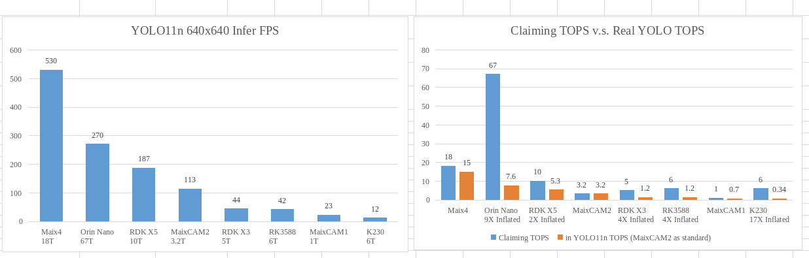
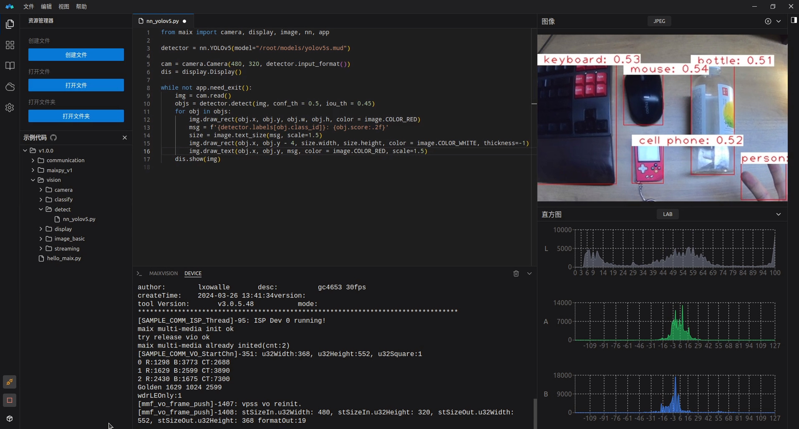
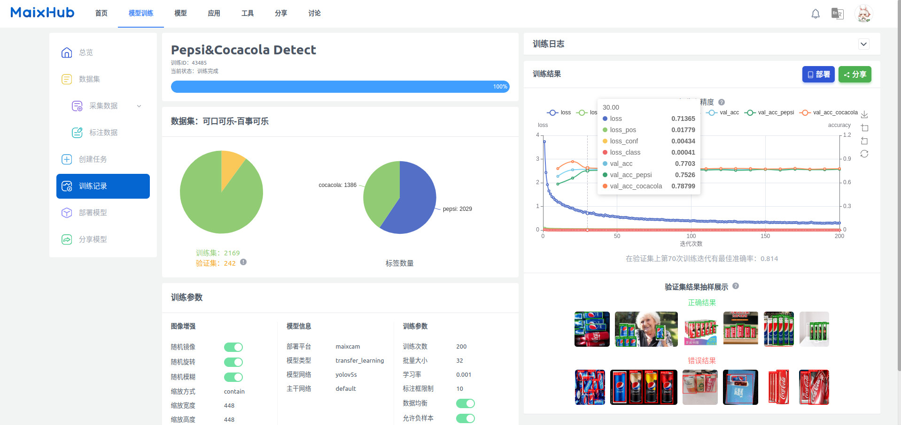
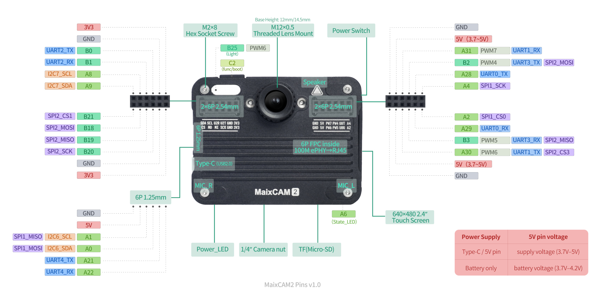

English
EnglishMaixCAM2 -- Rapid Deployment of AI Vision and Audio Applications

Introduction to MaixCAM2
MaixCAM2 is a hardware product designed for better implementation of AI vision, audio, and AIoT applications. It provides a platform for rapid prototype verification and mass production.
Key Features:
- Outstanding hardware performance: Dual-core
A53+12.8Tops@INT4 / 3.2Tops@INT8+4GB LPDDR4+ multiple hardware codecs. Only run the model on640x640resolution,YOLO11nreaches up to113FPS, andYOLO11sup to62FPS.
Here are some SOC run YOLO11n's benchmark:
 - Integrated hardware package: Supports up to
4K 1/1.8"camera,640x480high-definition touchscreen, dual microphones,WiFi6+BLE5.4, and more. No complex hardware adaptation required, ready to use out of the box. - Various hardware form factors: Versions available with enclosures and different accessory configurations, as well as a
core board. - Offline AI large model support: In addition to
convolutional models, supportsTransformer models, with plug-and-playLLM / VLM / ASR / TTS. - Comprehensive and easy-to-use software ecosystem: Provides well-polished MaixPy (
Python) + MaixCDK (C++) SDKs, extensive documentation, professional IDE, and cloud platform support.
Based on MaixCAM2, you can create:
- DIY Smart Camera: Equipped with
4Klarge-format1/1.8"sensor, supportingJPEG / RAW / H.264 / H.265encoding, easy-to-use software, andNPU-acceleratedAIfeatures, making DIY smart cameras simple. - Robots: Dual mics + HD camera + HD touchscreen + AI acceleration + rich peripherals. Supports
convolutional modelsandTransformer modelswith plug-and-playYOLO / LLM / VLM / ASR / TTS. Suitable for everything from toys to professional intelligent robots. - Production Line Quality Inspection Assistant: Traditional algorithms (OpenMV / OpenCV) plus hardware-accelerated AI recognition easily meet the demands of high-precision, real-time, and low-cost production line applications.
- Competition Weapon: A strong tool for competitions, offering high performance, compact size, and easy-to-use Python (MaixPy) and C++ (MaixCDK) SDKs. Enables lightning-fast development of competitive projects. Many students have already won top awards using MaixCAM.
- Educational Aid: For university research, teaching, STEM education, spreading cutting-edge knowledge, and inspiring future technologies.
- And more: Waiting to be discovered by you!
Feature Showcase
For more feature introductions, please refer to: MaixPy 主页
MaixCAM2 Hardware Specifications
Bold items are upgrades compared to MaixCAM / MaixCAM-Pro (first generation).
| Component | Description |
|---|---|
| CPU (Big Cores) | 1.2GHz A53 x2, runs Linux (Ubuntu) |
| CPU (Small Core) | RISC-V 32bit E907, runs RTT |
| NPU | 12.8Tops@INT4 / 3.2TOPS@INT8, supports convolution and Transformer models such as YOLO/LLM/VLM, YOLO11n 640x640 reaches up to 113FPS |
| Memory | 1GB / 4GB LPDDR4 options |
| Storage | Onboard 32GB eMMC, onboard TF card slot |
| Camera | Supports up to 8MP (4K)@30fps, 4-lane MIPI CSI input, 22-pin interface, supports split dual CSI |
| Display | 2.4-inch HD IPS capacitive touchscreen, resolution 640x480 (4-lane MIPI DSI output, standard 31-pin interface, 6-pin capacitive touch), supports up to 1080p@60fps output |
| Audio Output | Onboard PA amplifier + 1W speaker |
| Audio Input | Onboard analog silicon mics x2, direct audio capture |
| Networking | Onboard WiFi6 + BLE5.4 module, 6-pin FPC Ethernet interface (with external FPC-to-RJ45 module) |
| USB | Type-C USB2.0, supports both Device and Host modes, supports USB cameras |
| IO Interface | 2.54mm PMOD interface, provides 20 IOs + Vsys/3.3V/GND + 1.25mm 6-pin expansion interface, core board offers more IOs |
| Buttons | 1 x Power switch + 1 x Func (function) button |
| LEDs | Power indicator + User LED + Illumination LED |
| Codec | H.264 / H.265 / MJPEG hardware codec, supports 4K@30fps encoding, 1080p@60fps decoding |
| Peripherals | I2C / SPI / UART / ADC / PWM / WDT and other common peripherals |
| Power | Supports Li-ion battery charge/discharge management, with battery-equipped version available |
| Enclosure | Protective case measures 65x49x20mm with 1/4-inch standard tripod mount |
| IMU | Onboard six-axis IMU (3-axis accelerometer + 3-axis gyroscope) |
| RTC | Onboard BM8563EMA RTC chip + rechargeable coin battery, maintains time during power-off |
| Core Board | Gold-finger core board containing only chip core circuit + DDR, for easy custom hardware design |
| Dimensions | 66.5x50x21.2mm (Does not include lens) |
MaixCAM2 Software Ecosystem
We don’t just provide hardware — MaixCAM2 comes with a complete software ecosystem, including:
| Name | Description | Image/Video |
|---|---|---|
| MaixPy | Python SDK with rich and easy-to-use APIs, optimized for MaixCAM, supports hardware acceleration, and comes with comprehensive documentation and tutorials | 1. MaixPy Homepage 2. MaixPy Source Code |
| MaixVision | AI vision IDE for coding, code execution, real-time image preview, even graphical programming. Greatly lowers the difficulty and barriers to setup. |  |
| MaixHub | Online AI model training platform. No AI knowledge or expensive hardware required — train models with one click and deploy them to MaixCAM instantly |  |
| MaixCDK | C++ SDK equivalent of MaixPy. Developers familiar with C/C++ can get started immediately | See MaixCDK Homepage |
| App Store | Various apps and tools available for download without development. Developers can also upload and share apps | See MaixHub App Store |
| Sharing Hub | A community for developers to share experiences and projects | See MaixHub Sharing Hub |
| Local Large Models | Running Offline Large Models Locally | See Large Model User Guide |
Resources
MaixCAM Exclusive Resources (Provided by Sipeed)
- MaixCAM-Pro Official Docs (this documentation)
- MaixPy Official Docs (Python SDK) (MaixPy Source Code)
- MaixCDK (C/C++ SDK) (MaixCDK Source Code)
- System Source Code
- System Flashing Guide
- Camera and Lens
- Hardware Resource Downloads
- Enclosure and Mounts: Open-source 3D model files for enclosures, mounts, etc. are available on makerworld.com (recommended) or makerworld.com.cn. Search for
MaixCAM/MaixCAM2. - Pinout Diagram:
Note: To prevent incorrect insertion of PMOD or other modules that could cause damage, the
A2pin is intentionally blocked by default as a fool-proof design.

Chip Resources
MaixCAM2 is based on the AX630C chip from Axera, so their resources can also be referenced.
Accessories
Community
- MaixHub App Store
- MaixHub Sharing Hub
- Search
MaixCAMorMaixPyon GitHub - Search
MaixCAMorMaixPyon Bilibili - Search
MaixCAMon makerworld.com (recommended) or makerworld.com.cn - QQ Group: 862340358
- Telegram: MaixPy